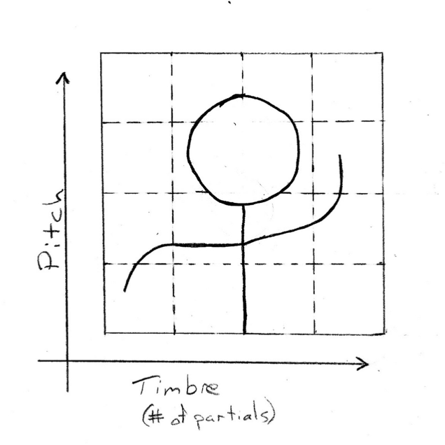

Visual Feedback in a Laptop Instrument
 Over time instrumentalists come to understand the distinctions between primary physical actions that produce sound and ancillary actions that aid in expressing musical or emotional information, which can be vital to audience understanding. It is possible that the loss of haptic feedback makes the properties of a musical instrument less understandable to both performer and audience. Perhaps then visual feedback can allow an instrumentalist to better understand the limitations of his or her instrument when no such haptic feedback exists, as is the case with many musical systems that incorporate live video interaction. This experiment tested the hypothesis that, in a video camera controlled software instrument, the presentation of visual feedback will aid in the users’ understanding of musical mappings to visual space. Participants were familiarized with such a software instrument and asked to recreate recordings of changes in pitch and timbre within timed trials. A visual feedback display was designed and presented only to an experimental group. For three separate recordings, each changing in one parameter (pitch or timbre), participants of the experimental group, on average, performed faster than those of the control group. These findings imply that visual feedback does allow an instrumentalist to better understand the limitations of their instrument.
This was the final project for Psychology of Music with Dr. Morwaread Farbood. The motion sensing and “visual feedback” was based off of a system similar to what was used in another project, a camera-based interactive synthesizer called Mirror Music.
Source code and paper are available on GitHub